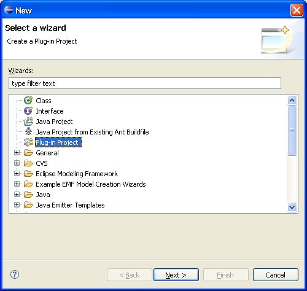
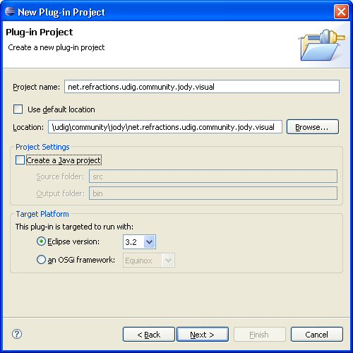
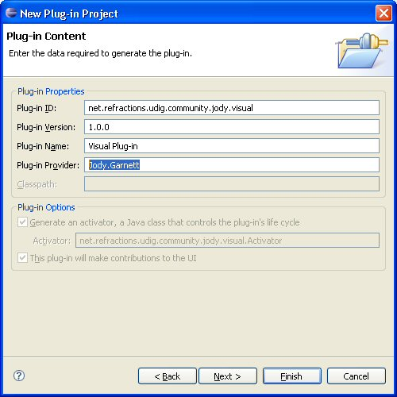
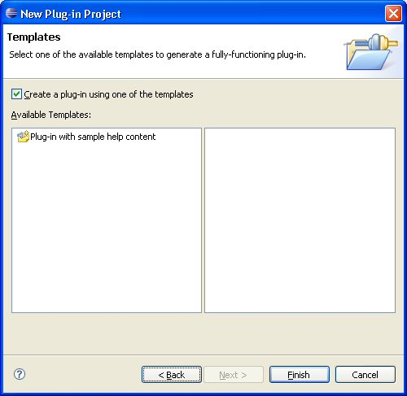
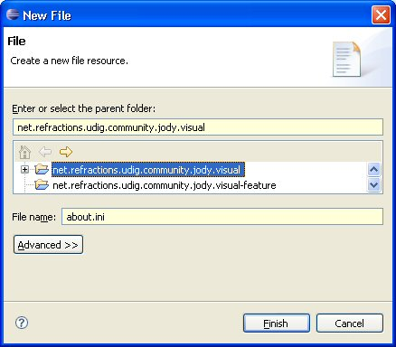

02 Making a Branding Plugin
A branding plugin is used to provide information to the user about your feature; this is mostly visible in the Help>About dialog box. This is "optional" but you may want to see your credits listed 
The following example assumes you are packaging up something in the uDig community folder, please adapt this example to your need.
Creating your Branding Plug-in
To create a branding plug-in for net.refractions.udig.community.jody.visual-feature:
- Start up the new wizard and select "Plug-in Project" before pressing Next

- Time to set up the branding plug-in
- Name your project accoding to the feature you are branding, you want to set this up so your feature and brading plugin have the same "id" at the end of the day.
Project name: net.refractions.udig.community.jody.visual
- Create your branding plugin in your community folder, uncheck "Use default location" and specify the directory to be created.
Location: C:\java\udig\community\jody\net.refractions.udig.community.jody.visual
- The branding plug-in does not contain any java code:
Create a Java project: uncheck

- And press Next>
- And now we can set up our plug-in information:
- The plug-in id should match your feature id, if not we can correct for it later.
Plug-in ID: net.refractions.udig.community.jody.visual
- You can credit your organization (or yourself) as the provider, please do not use any spaces as this is a "magic key" we will use later in the branding process.
Plug-in Provider: Jody.Garnett

- And press Next>
- Templates:
- You can choose to hold your online help as part of your branding plug-in, if so the available wizard offers a good starting point.

 | Optional Recomendation
You may also choose your branding plug-in to contain your online help:
- pros: this does make sense (in that the feature being branded contains a bunch of plug-ins that work together, and thus may wish to be documented together)
- cons: If you provide online help as part of the plug-ins being gathered up there is less danger of getting out of sync
|
Creating the Branding Files
To create any of these files you can:
- Open up New>File
- Select your plug-in, Enter the name of the file and press Finish

about.ini
The about.ini file provides information about the associated feature:
aboutText=%blurb
featureImage=icons/community.gif
about.properties
The about.properties file is used for internationalization, you can provide different translations in the usual manner.
blurb=<h2>Jody's Visualization Pack</h2>\n\
\n\
A fun set of visualization examples for the udig platform.\n\
Version: {featureVersion}\n\
Build id: {0}\n\
\n\
For more information please see my <a href="http://udig.refractions.net/confluence/display/~jgarnett">profile page</a>.
As shown above you can use a little bit of html as needed.
about.mappings
The about.mappings used to splice in build variables (such as the current date or build number). This is usual used as part of a release process, but you may find another use for it.
# about.mappings
# contains fill-ins for about.properties
# java.io.Properties file (ISO 8859-1 with "\" escapes)
# This file does not need to be translated.
0=I20050805-1
Branding Icon
The last file we will need is an icon of some sort for the about page.
Here are a couple to get you going:
- Cannot resolve external resource into attachment.
- Cannot resolve external resource into attachment.
- New > Folder
- Select your plugin form the list
- Folder name: icons
You can then right click on either of the above images and choose "Save Image As..." in order to deposit it into the above folder.
About
Next time you run your application you can see the following!
!about.png!
You will have to run your application in "feature" mode (rather then plug-in mode)
|
- [ How Can I Give My Eclipse Blob An Icon In The Flippin' About Dialog?|http://eclipse.pookzilla.net/2006/01/how-can-i-give-my-eclipse-blob-icon-in.php]
- Branding Your Application
|
[wiki]